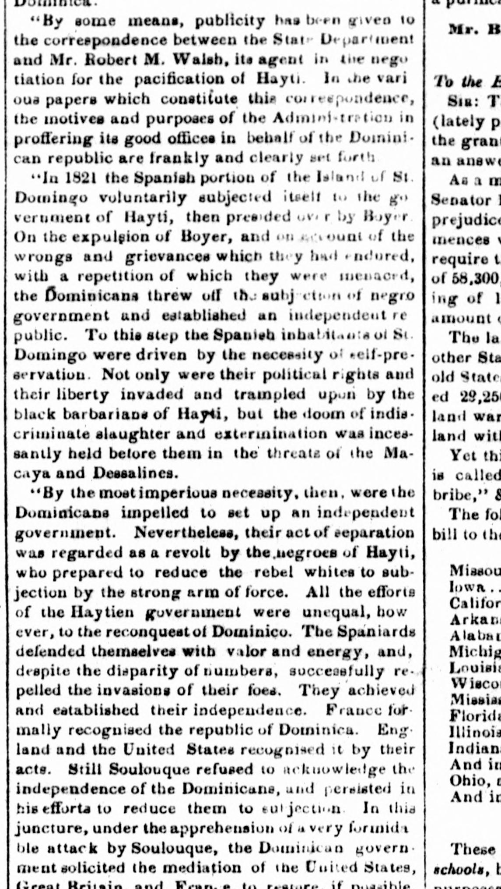
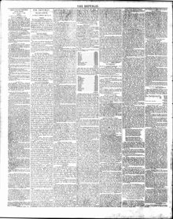

1., ,i.. ??j ous paper which constitute lliir coi i ospondeucf1., ,i.. ??j ous periódico que constituyen lliir coi i ospondeucf
The Republic. Washington [D.C.], December 18, 1852. Page 2. View the originalVer el original


See the full pageVer la página completaThe newspaper reported that correspondence between the State Department and its agent, Mr. Hubert M. Walsh, has been made public, clearly setting forth the administration's motives in offering its good offices to the Dominican Republic. According to the excerpt, the Spanish portion of St. Domingo voluntarily subjected itself to Hayti in 1821, but later established an independent republic out of self-preservation due to the invasion of their rights, liberties, and threats of extermination under Haytien rule. Although the negroes of Hayti regarded this separation as a revolt and attempted to reduce the Dominicans to subjection by force, all efforts by the Haytien government to reconquer the territory proved unequal.El diario notificó que se dio a la estampa la correspondencia cursada entre el Departamento de Estado y su comisionado, Sr. Hubert M. Walsh, esclareciendo los móviles del gobierno al brindar sus buenos oficios a la República Dominicana. Según el extracto, la comarca española de Santo Domingo se acogió espontáneamente a Haití en 1821, pero constituyó luego una república independiente por imperativo de propia conservación ante la vulneración de sus prerrogativas, libertades y fundados temores de exterminio bajo el dominio haitiano. Pese a que los negros de Haití juzgaron dicha separación como sedición y procuraron someter por la fuerza a los dominicanos, cuantas tentativas desplegó el gobierno haitiano para reconquistar el suelo patrio resultaron estériles.
FULL TEXT:TEXTO COMPLETO:
“By some means, publicity has been given to the correspondence between the State Department and Mr. Robert M. Walsh, its agent in the negotiation for the pacification of Hayti. In the various papers which constitute this correspondence, the motives and purposes of the Administration in proffering its good offices in behalf of the Dominican republic are frankly and clearly set forth.«Por algún medio, se ha dado publicidad a la correspondencia entre el Departamento de Estado y el Sr. Robert M. Walsh, su agente en la negociación para la pacificación de Haití. En los varios papeles que constituyen esta correspondencia, los motivos y propósitos de la Administración al ofrecer sus buenos oficios en favor de la república dominicana están franca y claramente expuestos.
“In 1821 the Spanish portion of the Island of St. Domingo voluntarily subjected itself to the government of Hayti, then presided over by Boyer. On the expulsion of Boyer, and on account of the wrongs and grievances which they had endured, with a repetition of which they were menaced, the Dominicans threw off the subjection of negro government and established an independent republic. To this step the Spanish inhabitants of St. Domingo were driven by the necessity of self-preservation. Not only were their political rights and their liberty invaded and trampled upon by the black barbarians of Hayti, but the doom of indiscriminate slaughter and extermination was incessantly held before them in the threats of the Macaya and Dessalines.«En 1821 la porción española de la Isla de Santo Domingo se sometió voluntariamente al gobierno de Haití, entonces presidido por Boyer. A la expulsión de Boyer, y por cuenta de los agravios y quejas que habían sufrido, con una repetición de los cuales eran amenazados, los dominicanos se sacudieron la sujeción del gobierno negro y establecieron una república independiente. A este paso los habitantes españoles de Santo Domingo fueron impulsados por la necesidad de la autoconservación. No solo sus derechos políticos y su libertad fueron invadidos y pisoteados por los bárbaros negros de Haití, sino que la sentencia de masacre y exterminio indiscriminados fue incesantemente sostenida ante ellos en las amenazas de los Macaya y Dessalines.
“By the most imperious necessity, then, were the Dominicans impelled to set up an independent government. Nevertheless, their act of separation was regarded as a revolt by the negroes of Hayti, who prepared to reduce the rebel whites to subjection by the strong arm of force. All the efforts of the Haytien government were unequal, how ever, to the reconquest of Dominico. The Spaniards defended themselves with valor and energy, and, despite the disparity of numbers, successfully repelled the invasions of their foes. They achieved and established their independence. France formally recognised the republic of Dominica. England and the United States recognised it by their acts. Still Soulouque refused to acknowledge the independence of the Dominicans, and persisted in his efforts to reduce them to subjection. In this juncture, under the apprehension of a very formidable attack by Soulouque, the Dominican government solicited the mediation of the United States, Great Britain, and France, to restore, if possible, peaceable relations with its savage neighbors«Por la más imperiosa necesidad, pues, fueron los dominicanos impelidos a establecer un gobierno independiente. Sin embargo, su acto de separación fue considerado como una revuelta por los negros de Haití, quienes se prepararon para reducir a los blancos rebeldes a la sujeción por el brazo fuerte de la fuerza. Todos los esfuerzos del gobierno haitiano fueron desiguales, sin embargo, a la reconquista de Dominico. Los españoles se defendieron con valor y energía, y, a pesar de la disparidad de números, repelieron con éxito las invasiones de sus enemigos. Lograron y establecieron su independencia. Francia reconoció formalmente la república de Dominica. Inglaterra y los Estados Unidos la reconocieron por sus actos. Todavía Soulouque se negaba a reconocer la independencia de los dominicanos, y persistía en sus esfuerzos por reducirlos a la sujeción. En esta coyuntura, bajo la aprensión de un ataque muy formidable por Soulouque, el gobierno dominicano solicitó la mediación de los Estados Unidos,